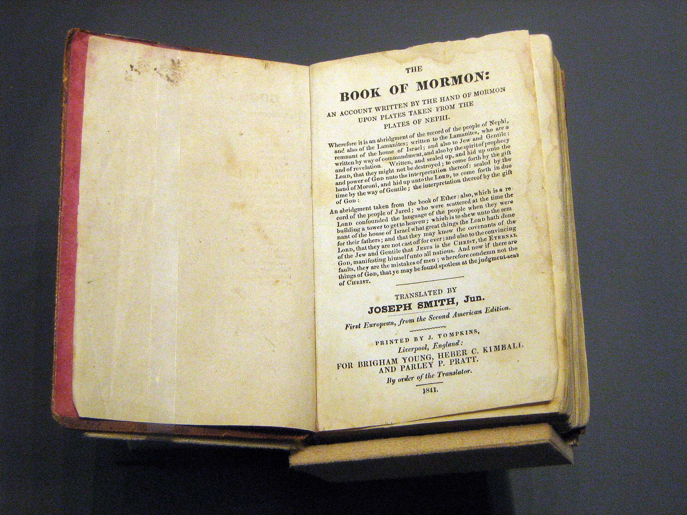
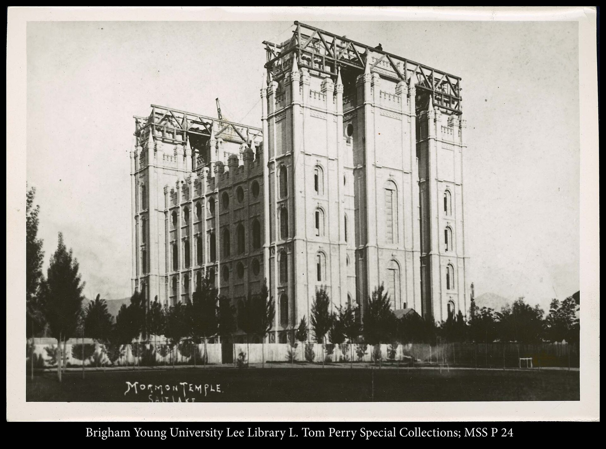

Words shared from the pulpit
Sacrament Meeting
I’ve been a member of The Church of Jesus Christ of Latter-day Saints all my life. Over the years I’ve been asked to give talks in sacrament meeting — about ten to fifteen of them. I’m gathering the titles and, where I can, recordings or transcripts, and each one will appear here as it’s confirmed.
Sacrament meeting is the weekly gathering of our congregation — a time of prayer, hymns, the sacrament, and messages prepared by members of the ward.
Each month a few members are invited to speak on a gospel topic, sharing from their own experience. It has been one of the quiet joys of my life to prepare those messages and to sit and listen to others give theirs.
The Talks
I gave my first talk long ago, and I’m still finding a few in old notebooks and boxes. The list below is being compiled — as each talk is confirmed, its title and details will take their place here.

Every talk I’ve given has been shaped by the scriptures — especially the Book of Mormon, which I have read again and again.
The stories, the prophets, and the witness of Jesus Christ in its pages have been the foundation of whatever I’ve had to say from the pulpit.

The temple has always pointed me home — a reminder of the covenants I’ve made and the eternal hopes I carry, and of the faith that has carried me through a long life.